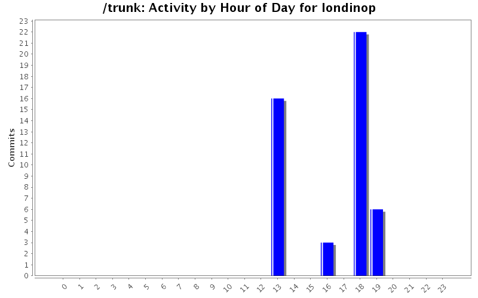
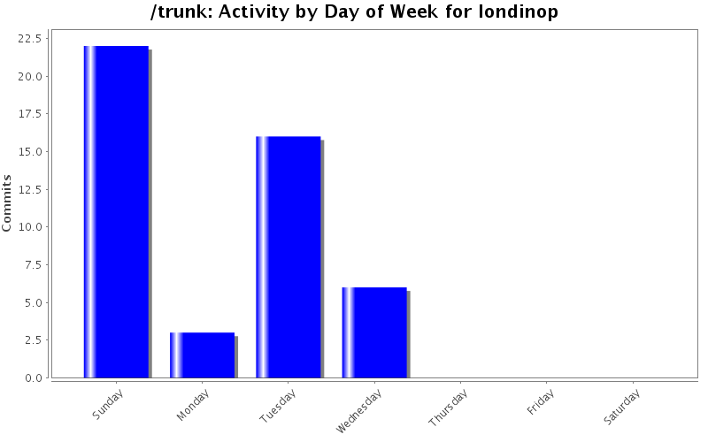
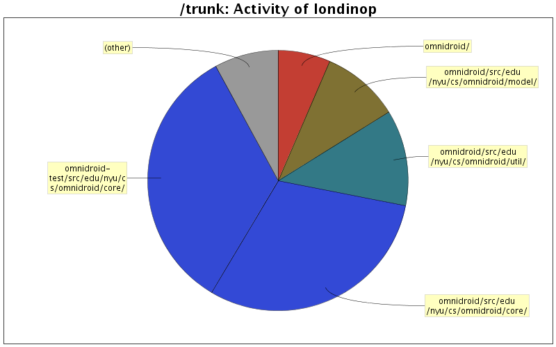

| Directory | Changes | Lines of Code | Lines per Change |
|---|---|---|---|
| Totals | 47 (100.0%) | 3046 (100.0%) | 64.8 |
| omnidroid-test/src/edu/nyu/cs/omnidroid/core/ | 12 (25.5%) | 1022 (33.6%) | 85.1 |
| omnidroid/src/edu/nyu/cs/omnidroid/core/ | 18 (38.3%) | 927 (30.4%) | 51.5 |
| omnidroid/src/edu/nyu/cs/omnidroid/util/ | 4 (8.5%) | 362 (11.9%) | 90.5 |
| omnidroid/src/edu/nyu/cs/omnidroid/model/ | 3 (6.4%) | 296 (9.7%) | 98.6 |
| omnidroid/ | 1 (2.1%) | 198 (6.5%) | 198.0 |
| omnidroid-test/src/edu/nyu/cs/omnidroid/util/ | 2 (4.3%) | 89 (2.9%) | 44.5 |
| omnidroid/src/edu/nyu/cs/omnidroid/tests/ | 1 (2.1%) | 83 (2.7%) | 83.0 |
| omnidroid-test/src/edu/nyu/cs/omnidroid/model/ | 1 (2.1%) | 66 (2.2%) | 66.0 |
| omnidroid/src/edu/nyu/cs/omnidroid/bkgservice/ | 3 (6.4%) | 2 (0.1%) | 0.6 |
| omnidroid/src/edu/nyu/cs/omnidroid/external/catcherapp/ | 2 (4.3%) | 1 (0.0%) | 0.5 |

CoreRuleDbHelper now only retrieves enabled Rules, added stopself to HanderService
3 lines of code changed in 2 files:
Removed warning from DualKey, added toString to Tree class
34 lines of code changed in 3 files:
Working Omnidroid core and tests
1722 lines of code changed in 22 files:
Core event handling modules redesigned
790 lines of code changed in 14 files:
HandlerService replaces DummyActivity
497 lines of code changed in 6 files: